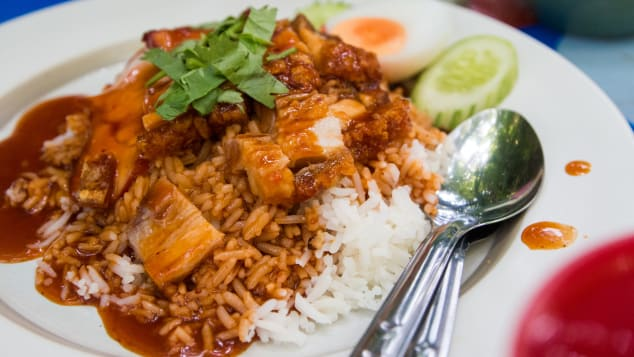
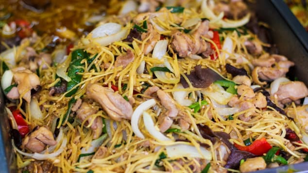
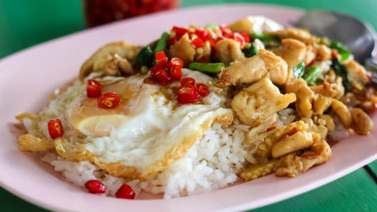
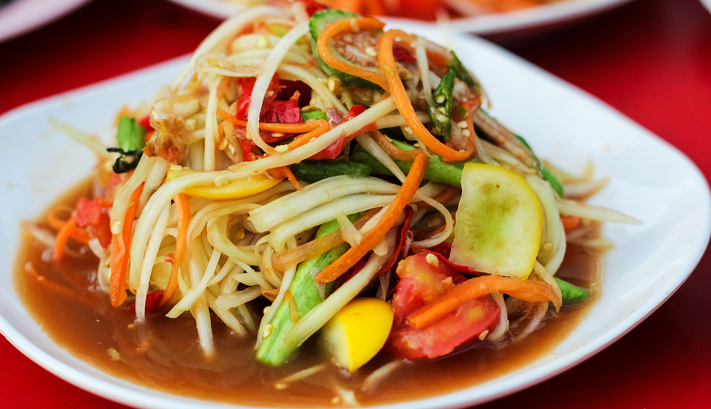

ครัวชายคลอง
ร้านอาหารบรรยากาศดี ริมคลองบางกอกน้อย อาหารไทย-เทศ คาว-หวาน เปิดบริการทุกวัน 8 โมงเช้าถึงหนึ่งทุ่ม
  

123/456 ริมคลองบางกอกน้อย แขวงบางกอกน้อย เขตบางกอกน้อย กรุงเทพฯ 10500 โทร. 02-123-4567, 081-123-4567